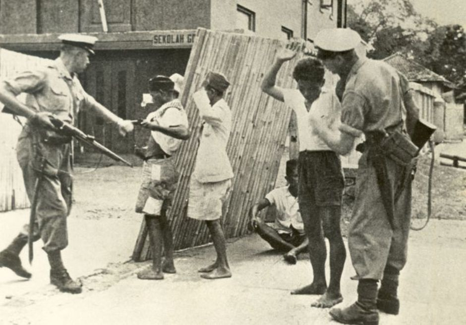

Peristiwa
VOC menyerang pertahanan Portugis di Ambon
Penjelasan
Setelah bercokol selama kurang lebih seabad, pada 25 Februari 1605, Portugis dipaksa hengkang dari Maluku. Masa kuasa Portugis di kepulauan rempah-rempah itu berakhir setelah ditikung oleh kompeni dagang Belanda (VOC). Salah satu syarat waktu garnisun Portugis menyerah ialah bahwa ada jaminan kebebasan beragama. Pada bulan 23 Februari 1605, kapal-kapal VOC menyerang kubu pertahanan Portugis di Ambon. Benteng pertahanan Portugis diserang bertubi-tubi dan berhasil dijebol. Dua hari kemudian, Portugis yang diwakili capitan benteng, Gaspar de Mello menyerahkan benteng Portugis tanpa perlawanan kepada VOC. Penyerahan bersyarat itu menetapkan pasukan Portugis yang bersenjata harus keluar dari wilayah Maluku dan bagi mereka yang ingin tetap tinggal harus bersumpah setia kepada Belanda. Seorang gubernur berbangsa Belanda diangkat untuk memerintah di sana atas nama Staten Generaal (parlemen Belanda).